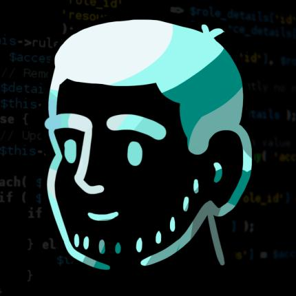
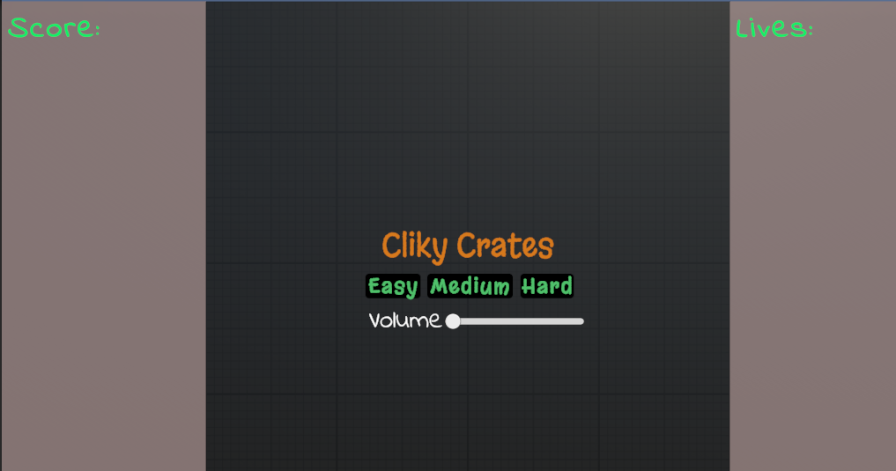
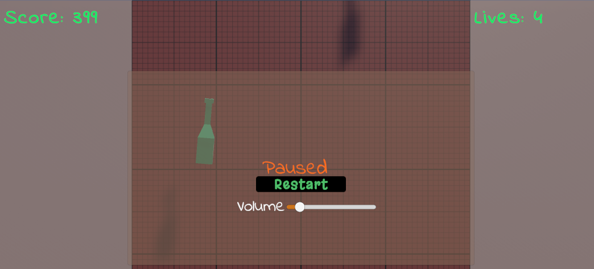
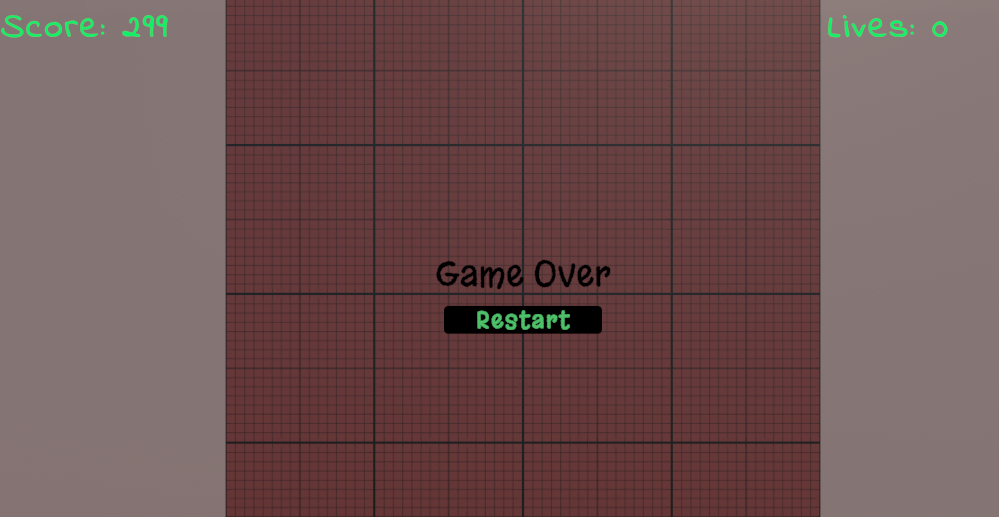

Un poco de mi

Resumen
Soy apasionado por la tecnología, estuve un tiempo trabajando en diferentes compañias de software
al final el objetivo siempre fue el mismo dedicarme al desarrollo de videojuegos , por eso actualmente
estoy estudiando con el fin de especializarme en el desarrollo de videojuegos con el motor en tiempo real
de unity, siempre he sido apasionado por lo que hago por eso me quedo con la frase "Elige un trabajo que te apasione
y no trabajaras ni un día más de tu vida", por eso estoy acá, por que sé que puedo aportar creativamente dentro de la
industria en temas como la resolución de problemas con proactividad, actualmente deseando implementar un poco de lo que sé
en tecnologías como firebase dentro de la industría de videojuegos
Habilidades
- C# - Unity
- JavaScript - Phaser
- TypeScript - Angular
- PHP - Laravel framework
- Mysql
- Firebase
Proyectos
War Of The Briefcase
Juego realizado en grupo para el proyecto final del Bootcamp Generation
el cual se trabajó durante un mes, es el resultado del esfuerzo y la dedicación de varios meses de estudio,
en este juego el objetivo puede ser, obtener primero el maletín que el enemigo o rescatarlo del enemigo, en cada nivel el objetivo puede variar
Protect The Magic Forest
Juego realizado en grupo durante uno de los jams dentro del bootcamp de Generation
protegete de los enemigos que intentan quitarte el terreno, listo para jugar?.
Between Death and Oblivion
Juego realizado en grupo durante uno de los jams dentro del bootcamp de Generation
Tú alma a ido al cielo y tienes la oportunidad de despedirte, qué tal si lo intentas?.
- 23 Supremos
Juego realizado en grupo durante el Global Game Jam, realizado con el framework Phaser de javascript
este juego quedo en fase beta, échale una ojeada .
Vídeos y Más
- Video de muestra de trabajo hecho con tutorial de Phaser
Juego realizado mientras aprendía phaser en el cual se implementa
un menu para almacenar las puntuaciones en firebase .
- Clicky Crates Unity Learn



Juego realizado durante uno de los tutoriales de Unity Learn
este juego pronto estará disponible en itch, se le están haciendo
algunas mejoras extras antes del lanzamiento del juego tutorial mejorado
luego del desafio del bonus.
Experiencias
Matrix Tech 2019-2020
- Desarrollar aplicaciones informáticas de acuerdo con el diseño y metodologías,
Evaluar requisitos de aplicaciones informáticas de acuerdo con metodologías de
análisis y estándares, Implementar aplicaciones informáticas de acuerdo con
requisitos de operación y modelos de referencia.
Generation BootCamp 2022 - 2023
- Actualmente especializandome con el motor en tiempo real Unity
mediante un entrenamiento intensivo con el fin de mejorar y complementar
habilidades necesarias como Game Developer entre otrás más.